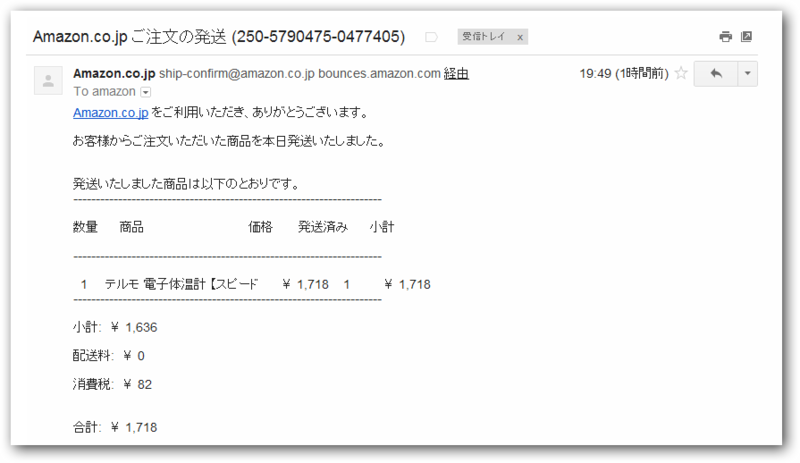

風邪で死にかけたので Amazon で体温計を買った
公開日：
月曜日、どうも頭がふわふわするので3時か4時ぐらいに会社を早退して家で寝てたのだけど、次の日の朝の4時に起きてもあまり具合がよくならない。おなかは減るのでおかゆでも作ろうと思ったのだけど、ふらふらして卵を落として割ってしまうぐらい。最後の卵だったのに！ 絶望して、その場で病欠のメールを会社に送った。こういうとき、独りはつらい。
ともかく、「彼を知り己を知らば百戦して危うからず」と言うし*1、まずは現状把握が最優先だ。まずは体温でも計るべきだろう*2。
しかし、この家には体温計すらない。

テルモ 電子体温計 【スピード検温式 平均20秒】 C231
- 出版社/メーカー: テルモ
- メディア: ホーム&キッチン
- 購入: 6人 クリック: 14回
- この商品を含むブログ (3件) を見る
そこで、Amazonで適当に体温計を選んで購入。しかもなんとあの「お急ぎ便」のお試しが使えるじゃないか。朝頼んだらおやつの時間には“たけのこの里”が届くという「お急ぎ便」ですよ！*3 きっと、朝の4時に頼んだらお昼頃には着くに違いない！*4
お急ぎ便だったら今日来るんだと思ってたら「お届け予定日： 2012年5月17日」
— だるやなぎさん (@daruyanagi) 5月 15, 2012（その日から見て）明後日到着だと……！ おわた……おわた……
体温計はもうあきらめた。あとは、本を読んだり、iPad でネットみたり、Hulu を観たりで、その間疲れたら寝るの繰り返し。そして、目が覚めてメールをチェックすると……

もう治りかけとるわヽ(`Д´)ﾉ
なんだか遅いのか早いのかわからない「お急ぎ便」だった。まぁ、商品にもよるのかもしれないけれど、個人的にはあまり必要のないサービスだなぁ、と思った。お急ぎじゃなくても十分早いしね。